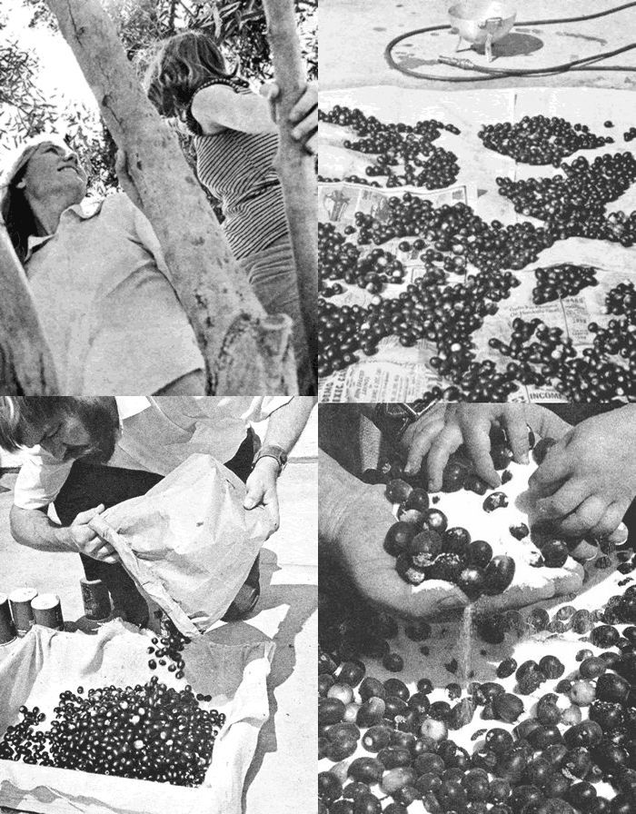

LEFT: When the olives have shriveled, the salt is separated from the cured fruit by using a kitchen strainer or plastic sand sifter, and the edibles - still in the colander - are then dipped into boiling water for a few seconds and allowed to dry over-night RIGHT : Voila ! The finished product ain't much to look at, but will provide plenty of mighty tasty eating over the months to come. Your olives will lend zest to foods, or will make great relish. And it sure beats paing high supemarket prices!